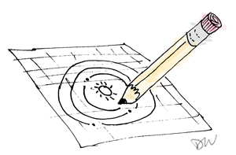
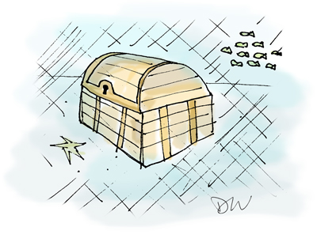
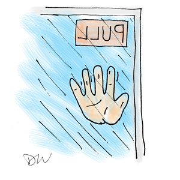

Learning Animation
I finally figured out an animation workflow that is easy.
If the love of money is the root of all evil,
Is the love of God the root of all good?

Everything begins with the Creator
Look through a microscope or telescope and be filled with awe.
'Awe' is not an attribute of chaos but a word we ascribe to the work of a Designer.

The darkness hides valuable treasure
People naturally avoid the painful and sad places of life.
But in those times, God shows Himself to those who seek for him.
11 years later
I am a better person because of the helpmate God gave me.
Danae, you are the love of my life.
Happy Anniversary!
